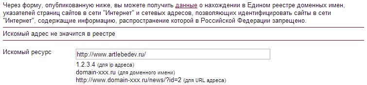

У меня недоступен сайт www.artlebedev.ru. Трассировка с домашнего компьютера показывает, что фильтрация адреса осуществляется на вашем оборудовании.
[далее цитата результатов трассировки]
Форма реестра запрещённых сайтов по адресу zapret-info.gov.ru указывает, что домен www.artlebedev.ru не содержится в списке запретных ресурсов. Из новостей я узнал, что в реестр запретных сайтов попала отдельная страница указанного сайта, расположенная по адресу www.artlebedev.ru/strip/2012/11/22/. Форма реестра запрещённых сайтов также подтверждает, что адрес данной страницы присутствует в реестре.
Напоминаю вам, что закон от 27 июля 2006 года № 149-ФЗ «Об информации, информационных технологиях и защите информации» предусматривает отдельно случай, когда в реестр попадает целый домен, и отдельно случай, когда в реестр попадает адрес конкретной страницы. Поскольку в данном случае речь идёт именно о втором варианте (результаты запроса через форму реестра запрещённых сайтов это подтверждают), неправомерно блокировать доступ ко всему сайту. Это нарушает моё право на доступ к информации, а также заключённый между нами договор о предоставлении услуг телематической связи «Интернет». Прошу снять блокировку ресурса, при этом сохранив блокировку отдельной страницы, адрес которой содержится в реестре запрещённых сайтов.
